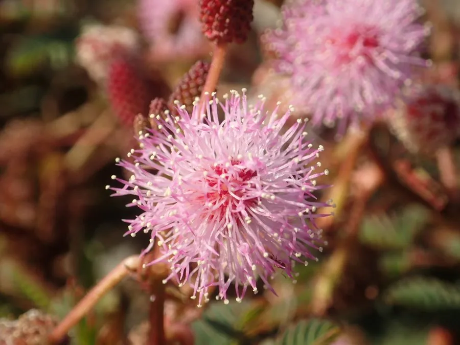

花卉与草本 · 植物界
含羞草 Mimosa pudica

豆科多年生草本，叶片被触碰后会迅速闭合下垂，原产热带美洲，因独特的触敏运动而广为人知，常作盆栽科普植物。
- 分类
- 门被子植物门纲木兰纲目豆目科豆科属含羞草属
- 栖息环境
- 热带美洲的草地、路旁与灌丛，喜温暖湿润、阳光充足
- 地理分布
- 原产热带美洲，现热带、亚热带地区归化，中国南方常见
- 保护级别
- 暂无评估
物种志
含羞草为豆科含羞草属多年生草本，常作一二年生栽培，株高 20–60 厘米，茎直立或匍匐，多分枝，全株被钩刺和毛。叶为二回羽状复叶，小叶 10–20 对，排列整齐。头状花序球形，花小，淡粉红色，花期 7–10 月，果期 8–11 月，荚果扁平、由 3–5 节组成。
含羞草原产热带美洲，喜温暖、阳光充足和湿润的环境，不耐寒，在中国南方可露地栽培，北方多盆栽。它的叶柄基部和叶枕细胞在受到触碰时迅速失水，导致叶片闭合、叶柄下垂，数分钟后可恢复，这种触敏运动被认为有减少水分蒸发和躲避昆虫的作用。含羞草全株含含羞草碱，长期接触或误食可能影响健康；在热带地区它生长蔓延快，有时被视为杂草。
形态与习性
- 株高20–60 厘米，茎多分枝
- 花期7–10 月，头状花序球形
- 果期8–11 月，荚果扁平
- 光照喜充足阳光
- 水分喜湿润，忌干旱
- 土壤疏松、排水良好的沙壤土
- 繁殖以播种繁殖为主
- 主要用途盆栽观赏、科普教学
趣味知识
- 含羞草受触碰后，叶枕细胞迅速失去膨压，叶片闭合、叶柄下垂，数分钟后恢复。
- 它的触敏运动可减少水分蒸发，也被认为有助于躲避昆虫取食。
- 含羞草全株含含羞草碱，长期接触或误食可能影响健康。
- 在热带地区，含羞草种子繁殖快、带刺，有时成为农田杂草。